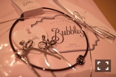
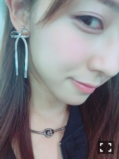

| 2016/10 08 Sat | 斎藤ちはる 答え(´>∀<｀)ゝ |
ちはるーむへようこそ！
今日は10/8。
UTB+が発売されました。
綺麗な水色のワンピース。
眩しくて(> <)の顔する私。
髪の毛をバサっとする私。
今回の撮影は、7/11にブログで投げかけた
3つの質問に対しての答えを
UTB+さんが撮影を通じてお答えしてくれるという
新しいものでした。
ロングインタビューでは
本音を包み隠さずお話しし、
途中、過去や現状を思うと
涙が止まらなくなり
言葉に詰まりながらお話していました。
こんなに泣いたインタビュー
こんなに時間のかかったインタビュー
こんなに自分と向き合うインタビューは
初めてだったんじゃないかと思います。
「どんな話をしているか
どんな事を思っているのか」
是非インタビューを読んでいただきたい。
そしてUTB+さんがお答えしてくださった
質問の答えを胸に受け止め
これからも前へ前へ進んでいこうと
改めて思いました。
是非誌面でm(_ _)m
-------------------------♡
#chihaOOTD
今日は最近買ったアクセサリーを
紹介します\( ˆoˆ )/

全てBubblesのもの！
黒いチョーカー風ネックレスは
さりげないかっこよさや
合わせやすさに惹かれました。
シルバーのリボンチョーカーは
黒いリボンは私も持っているし
多分皆さんも持ってる方多いかと思い
敢えてのシルバーにしました！
シルバーのリボンイヤリングは
その存在感にまず惹かれ、
リボンだけどシルバーなので
甘すぎない感じがいいなと思いました。
シルバーアクセサリーが
今は気になってるのかも(_ _).｡o♡

つけるとこんな感じ！！
これから沢山身に付けます(﹡ˆ ˆ﹡)
-------------------------♡
♬ ChihaMusic
「プレゼント」BUMP OF CHICKENさん
今突然聞きたくなった曲。
歌詞の世界観が大好き。
とてもロマンチックで、
1人じゃないって事を教えてくれる。
どの歌詞も胸に響くけど
一番好きなのは
"きっと今もまだ震えながら
笑おうとして泣いて
音の無い声で助けを呼ぶ
それは正しい姿"
深い。切ない。。
UTB+を読んでくださった方、
良かったら是非ブログのコメントに
感想や感じた事を教えて欲しいです！
皆さんがどう思ったのか知りたくて(_ _).｡o○
待ってます。
おやすみ〜
斎藤ちはる